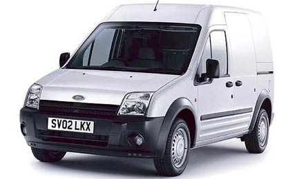

|
Not: Ýlk defa TurkCADCAM.net
Dergisi Ocak-Þubat 2006 Sayýsýnda kýsa bir özeti yer almýþ bu e-posta arþivinin büyük bir bölümü
Eylül 2008'de TurkCADCAM.net portalýndan yayýnlanmaya baþlamýþtýr.
"Yerli otomobil tasarým ve imalatý" konulu fikir ve görüþ alýþveriþlerine ait mesajlarýn tümüne ise grup arþivinde arama yaparak ulaþýlabilir
Salih Emin'in 21.10.2005 tarihinde sektörden 5.000'e yakýn üyesi olan TurkCADCAM e-posta grubuna gönderdiði "Yerli otomobil tasarým ve imalatý?" baþlýklý mesaja 1 ay içinde 60'dan fazla cevap geldi. Bu cevap ve yorumlarýn hepsi de birbirinden farklý ve çok deðerli görüþler ve bilgiler içeriyordu;
21.10.2005
Deðerli üyeler,
Geçenlerde aklýma bir konu takýldý; Türkiye'de bilindiði üzere birçok CAD programýnýn satýþýný yapan yetkili satýcýlar bulunmaktadýr. Bu firmalar programýn tanýtýmýný yapmakla birlikte ayni zamanda eðitim ve destek hizmetleri de sunmaktadýr. Bu firmalar vesilesiyle piyasalarda tasarýmcýlar ve çizimciler yetiþmektedir. Kendilerine buradan, özellikle Türkiye'nin tasarým alanýnda geliþmesi için katký saðladýklarý için teþekkürlerimi sunuyor ve muvaffakiyetler diliyorum...
Ben de birkaç CAD programý kullanýyorum; Bu programlarý kullanýrken kullanýcýya sunduklarý birçok tasarým araçlarý ile insan ister istemez "tasarým yapmamak imkansýz" diye düþünüyor. Hatta olayý biraz daha ciddileþtirmek ve büyükleþtirirsek "Türkiye olarak neden bir otomobil yapamayalým?" düþüncesi doðuyor.
Tabiî ki bu iþler ekip isi. Ancak TurkCADCAM grubunda bu sinerjiyi oluþturacak ve bu yükü omuzlayacak istidat ve kabiliyette kiþilerin olduðuna inanýyorum.
Bir ara bu grupta Türk malý bir CAD programýn yapýlmasý ile ilgili görüþler sunulmuþ ve daha sonra bu isin zorluðu ile ilgili görüþler ortaya atýlýnca defter kapatýlmýþtý. O yazýlar ve görüþleri büyük bir merakla takip etmiþtim ve nihayetinde defterin kapatýlmasýna üzülmüþtüm tabiî ki...
Arkadaþlar, ne dersiniz? Bu grupta CATIA, UG, Pro/ENGINEER ve SolidWorks vb. gibi otomotiv ve makine sektörüne hitap eden programlarý kullanan zeki insanlar var. Bu grupta, iç ve dýþ tasarýmý ile birlikte, üretim kriterlerine uygun þekilde araç modelleyip üretime geçirebilecek kiþilerin olduðuna inanýyorum...
Görüþleriniz neler arkadaþlar?
Hepinize hayýrlý çalýþmalar ve iyi iftarlar...
Salih Emin
Teknik Ressam
22.10.2005
Salih bey,
Bu fikrinize can-ý gönülden destek veriyorum. Bence bilgi paylaþýmý ve ekip çalýþmasýyla yapýlamayacak bir þey yok...
Bu noktada otomotiv sektöründe Ar-Ge ve atölye çalýþmalarýnda hizmet veren teknik elemanlara ben de buradan çaðrýda bulunmak istiyorum. Hatta bu konuda en ufak fikir verebilecek tüm grup üyelerine de çaðrýda bulunmak istiyorum;
Bir bilgi paylaþýmý platformu oluþturalým ve bu platformda çalýþmalara "start" verelim.
Bence önemli olan iþi yapmak istemek. Yapmak istenilen iþ ne kadar kompleks olsa da yanlýþlardan doðrulara ulaþabiliriz. Bence her yanlýþtan doðruya giden bir yol vardýr.
Endüstriyel tasarýmcýyým, ürün dizayný, mekanik dizayn konusunda hizmet veriyorum ve bu konuda oluþturulabilecek her türlü platformda yardýma gönüllüyüm...
Saygýlarýmla
Tuna Emre Erecek
Ar-Ge Müdürü
Main Çelik Ticaret Ltd. Þti.
22.10.2005
Salih bey,
Diyelim ki tasarladýk (aslýnda bu anlattýðýnýz kadar basit bir iþ deðil); bugün bir otomobil tasarýmý (sadece tasarýmý) testleri prototipleri vs. Minimum 500 kiþilik deneyimli bir ekiple know-how da almak koþuluyla 3 yýl sürer ve minimum 250.000.000 USD para gerektirir...
Ayrýca her þeyi hallettiðinizi varsayalým. Kime satacaksýnýz? Kapýda hiç bilmediði bir markayý sýrf "yerli malý, yurdun malý" diye bekleyen müþteriler mi olacak?..
Bir zamanlar imza markalý bir araç yapýlmýþtý. Yani her bir parçasý farklý markalardan alýntý olan ve bunun dýþýndaki unsurlarý çamur ve hýzlý prototiplerle yapýlmýþ bir araçtý. Araç tasarýmýný ve süreçleri bilen kiþiler dýþýnda herkesi yanýltabilecek, kandýrabilecek bir üründü...
Arkadaþlar, araç tasarýmýný herhangi bir makine tasarýmý ile karýþtýrmamak gerekir; çok ama çok zor ve karmaþýk bir süreçtir. Büyük bir bilgi birikimi ve deneyim ister. Yoksa bunu herkes yapabilirdi. Olay sadece tasarým iþi deðildir. Epeyce bir mühendislik iþgücü isteyen bir süreçtir...
Saygýlarýmla
Yavuz Kaya
Kamyon Ürün Geliþtirme
Þasi Sistemleri
Ford Otosan
23.10.2005
Salih Bey,
Görüþlerinize kesinlikle katýlýyorum; Bizim içimizde bu programlarý yurt dýþýndaki kullanýcýlardan kat kat daha iyi kullanan arkadaþlar olduðuna inanýyorum...
Hem böyle bir ise giriþsek, bitiremezsek bile bize büyük faydasý olacaðýna inanýyorum.
Böyle bir projeye elimden gelen bütün yardýmý yapmaya hazýrým.
Herkese iyi çalýþmalar.
Mehmet Bezirkan
Makine Mühendisi
Ar-Ge Böl.
Varlýk Makina San.
24.10.2005
Çok amatörce bir yaklaþým olduðunu düþünüyorum, araba tasarlama fikri çok güzel ve idealistçe... Ancak gerekli know-how birikiminin yüz yýla dayanmasý gereken bir projedir bu. "Haydi biz araba tasarlayalým" demekle olmuyor. Çok iyi Pro/ENGINEER, CATIA, UG vs. bilmekle de olmuyor.. Bu programlarýn bir teknik resim masasýndan farký yok.. Tasarým araçlarýdýr sadece... Binlerce katý model programýný çok iyi kullanabilen insanlarý bir araya getirin isterseniz, yeteri kadar know-how'dan yoksun iseler yaptýklarý yetersiz katý modellerden ileriye gidemez...
Öncelikle çok iyi matematik bilmek gerekiyor, çok iyi fizik bilmek, çok iyi malzeme bilgisi, çok iyi termodinamik bilmek, çok iyi mukavemet, kinematik, dinamik vs. bilmek gerekiyor.. Sadece bilmek de yetmiyor, ileri derecede ÇOK iyi bilmek gerekiyor.. Yüzyýllara dayanan bir birikim gerekiyor... Ve çok çalýþmak gerekiyor..
Bir diferansiyel denklem çözümünün sanayimizde ne kadar yeri var sizce? Ne kadarýmýz karmaþýk denklemler çözüyoruz yaptýðýmýz projelerde?..
Amacým eleþtirmek deðil, ama kuru kuruya hayal kurmak da deðil..
Mühendislerimiz bilim adamý seviyesinde olabilirse ve her yaptýðýmýz projeleri bilime dayandýrabilirsek elbette ki bir süre sonra otomobil de yaparýz, uçak da yaparýz, diðer gezegenlere de gidebiliriz.. Ama BÝLÝM þart... BÝLÝMADAMI þart... ve ÇOK ÇALIÞMAK þart.. Bilmeden ne yapabiliriz?
Böyle projeler yapabilmek ve Dünyaya satabilmek ve öncü olabilmek uzun bir süreçtir. Bir baþlangýç noktasý vardýr. Henüz bir baþlangýç noktamýz bile yok, böyle düþünüyorum..
Herkese iyi günler diliyorum.
Latif Taþtan
MAJET Sujeti ile Yüksek Basýnçla Kesme San. ve Tic. Ltd. Þti.
Ýstanbul
24.10.2005
Salih bey,
Bu zaten yapýlýyor; Bursa'da Hacý Ýsmail Hakký Keskin ve kardeþleri Güleryüz Fabrikalarý'nda üretim yapýyor. Müþteri de kuyrukta;
................
Güleryüz Karoseri Otomotiv Sanayi ve Tic. A.Þ. tarihçesi:
1967 yýlýnda baba ve üç kardeþ, kendi bilgi birikimleri ile küçük bir iþ yerinde, kazalý araçlarýn kaporta iþlemlerini yaparak karoser alanýnda ilk adýmý attý. Daha sonra 1982 yýlýnda Güleryüz A.Þ. adý altýnda küçük bir aile þirketi kurarak faaliyetlerine baþladý. Çeþitli marka ve teknik özelliklere sahip þasiler üstüne motorlarý arkaya alarak, çeþitli resmi kuruluþlara, askeriye ve özel þirketlere, dönemin ihtiyaçlarýna göre çeþitli üretimler yaparak faaliyetlerine devam etti.
1999 yýlý baþýndan itibaren otobüs seri üretimine karar vererek bu yönde çalýþmalara baþladý. 2000 yýlý baþýndan itibaren kendi markasý ÇOBRA ile otobüs üretimine baþlamýþ ve bu yönde büyük baþarýlara imza atmýþtýr;
www.guleryuz.com
................
Þu anda Türk bilgi birikimi uçak da dahil her þeyi üretebilir...
Elektrikle ve/veya hibrit ve/veya basýnçlý hava ile çalýþacak araç motorlarýný geliþtirmeliyiz...
Saygýlarýmla
Murat Birecik
Kimya Mühendisi
Murat Birecik Marin Teknik Tic. Ltd.
Ýstanbul
24.10.2005
Deðerli üyeler,
Salih Bey'in önerisi (detaylý bir istek belirtilmemiþ ama) oldukça yapýcý bir fikre dönüþtürülebilir. Mesajýnda "pazarlama amacýyla otomobil üretelim" diye özel bir cümle göremedim. Heyecanla yazýlmýþ bir mesaj gibi düþünüyorum ve bu yüzden büyük amaçlarý çaðrýþtýrýyor olabilir. Eminim Salih Bey de bir CAD yazýlýmýnda bir kaç saatte üretilebilecek bir modelin, gerçek hayatta bambaþka ihtiyaçlar gerektireceðini kabul ediyordur.
Kendi fikrimi kýsaca yazayým:
Bence seri üretim amacýyla ürün tasarlamak ile amatör-deneysel amaçlarla ürün tasarlamak arasýnda bir çok fark var: bütçe, bilgi ve tecrübe gerekliliði, keyif bunlarýn baþýnda geliyor.
Amacý iyi belirlemek lazým. Þahsen seri üretim amacýyla bir araç tasarýmýna girmek bana da mantýklý gelmiyor. Ancak, seri üretime de temel olabilecek ve ülkemizde eksik olan ÜRETÝME YÖNELÝK TASARIM konusuna hevesle ve kararlýlýkla yaklaþýlmasý gerekli. Bu yüzden teknik tecrübeyi de artýracak þekilde deneysel çalýþmalara gidilmelidir. Eminim böyle bir çalýþma, içerisindeki kiþilere hem tasarým, hem analiz, hem de üretim konusunda tecrübe kazandýracak ve "ileride" neye ihtiyacý olduðunu gösterecektir.
Þöyle bir öneriyle destek vereceðim:
Çeþitli ulusal ve uluslararasý yarýþmalar farklý eðitim seviyeleri ve sektörlerden herkese açýk olarak düzenleniyor. Yapýcý enerjisi bulunan ve bunu paylaþmak isteyen teknik insanlar ortak bir platform oluþturup fikirlerini bu yarýþmalarda deneyebilirler. 3-4 kiþilik çekirdek gruplar böyle yarýþmalarda büyük iþler çýkartabiliyorlar.
Örneðin, TÜBÝTAK'ýn güneþ enerjili arabalarla ilgili yarýþmasýna katýlmak ilginç bir deneyim olabilir. Burada elektronik ve elektrik, malzeme ve mekanizma, yapýsal tasarým ve analiz ve hatta sürüþ güvenliði gibi birçok konuda kendinizi ve fikirlerinizi sýnayabilirsiniz.
Ýyi çalýþmalar ve iþe giriþecek herkese baþarýlar dilerim,
Coþkun Özaþçýlar
Havacýlýk Mühendisi
TAI
Formula G
24.10.2005
Salih Bey,
Bu temennilerinize katýlýyorum. Ancak bahsettiðiniz þeyin boyutlarýný açýklamak üzere bir iki konuyu açýklamak isterim:
Türkiye'de araç tasarlayýp yapmak... Ford Otosan olarak biz bu iþi yapýyoruz zaten: Transit Connect.
Ama bu proje için 1000'den fazla mühendis ve teknik ressam (bu rakam içinde yan sanayi çalýþanlarý da mevcuttur) "tam zaman" yaklaþýk 3 yýl çalýþtý. Yapýlan yatýrým yüz milyonlarca dolar...
Fazla söze gerek yok sanýrým; Rakamlar her þeyi açýklýyor?..
Saygýlarýmla,
Sami Özbay
Fort Otosan

Ford Transit Connect
|